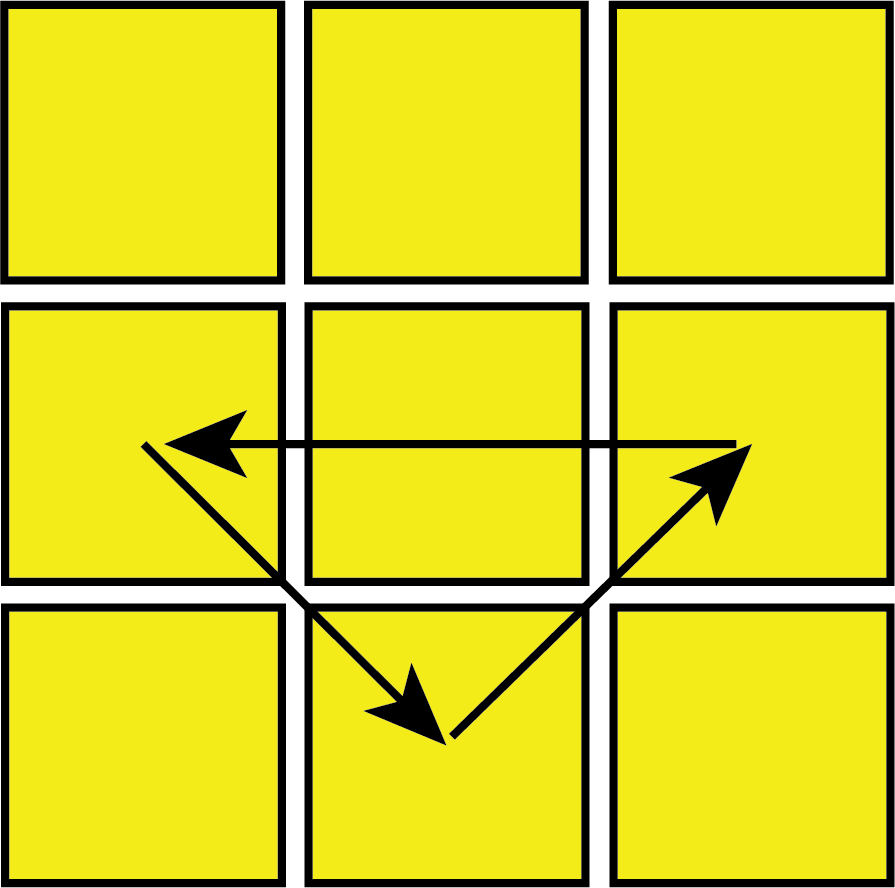
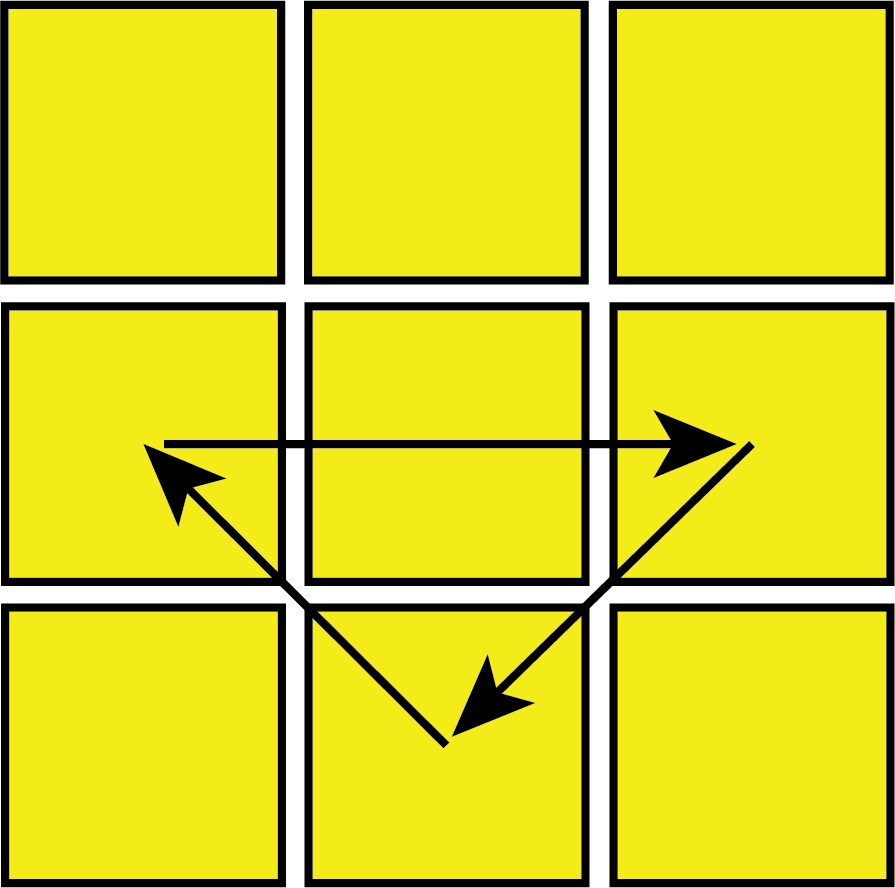
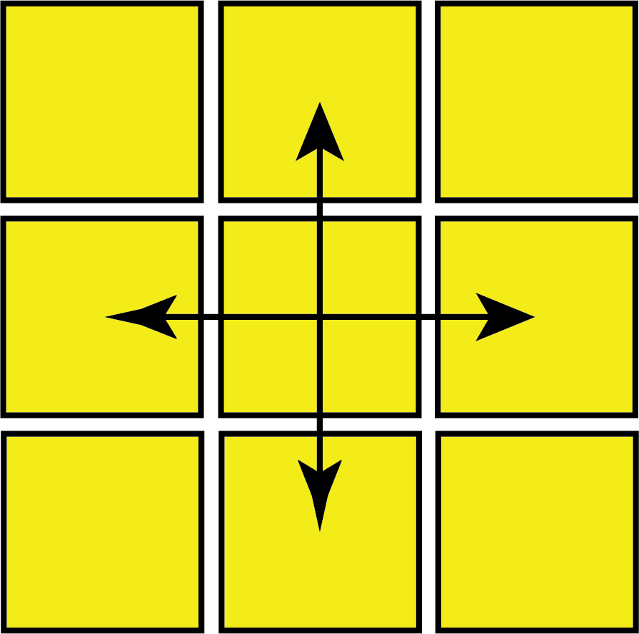
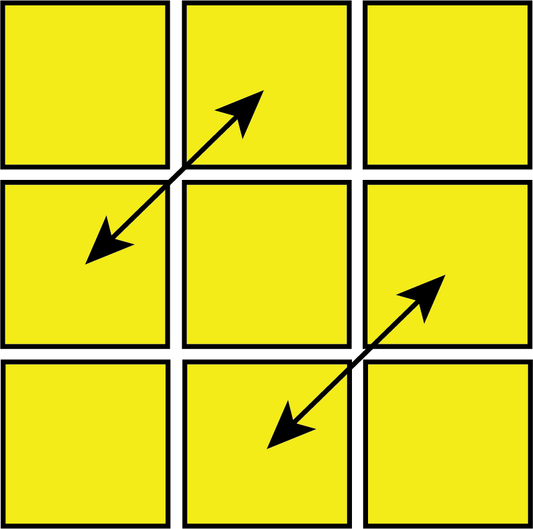

By this step, your Rubik's Cube should look almost completely solved, however the yellow edge pieces are still in the wrong position and don't line up with the corners and centers. For this step, we will be moving the yellow edge pieces to match the colours of each of the side center pieces, which will solve the entire cube. This step is the least intuitive to grasp, but all you need to know is that using the algoritms shown below will lead to the edge pieces swapping as indicated by the arrows. There are 4 different algorithms for this step, but you can solve the any of the cases knowing any amount of algorithms.
To use the algorithms for this step, make sure you first align the corners to that the colours on the corners match the rest of the sides, as shown at the end of corner PLL. There will be either 3 or 4 edges that are in the wrong position, which you can tell by the 'headlights' on that side, as a edge in the right place will just be a solved line without headlights. If there are 3 edges in the wrong position, hold the cube so that the center headlights are facing you, and the back is the solved edge piece. Then, note the colour of the edge piece and figure out which side it needs to move to. If the edge piece needs swap with the left, use the left-handed U permutation, and vice versa for right.
If there are 4 edges that need to be solve (no solved edges), then note if the edges are swapped striaght across, or diagonally. Then use the appropriate algorithms to solve the cube (it will work no matter which side is facing fowards).
If you don't want to learn all 4 algorithms, you can also only learn the first algorithm, which is the counter-clockwise (right-handed) U-perm. In order to do this, all you need to do is to always hold the cube so the center headlights face towards you before using the algorithm. If there are 4 headlights (no center one) you can use the algorithm on any side.
In order, these are examples of case where you should use the: Right U-Perm, Left U-Perm, H-Perm (Straight Swap), and Z-Perm (Diagonal Swap). The back side is already solved in the first 2 cases, but not in the last 2 cases.
 U-Perm (right): R U' R U R U R U' R' U' R2
 U-Perm (left): L' U L' U' L' U' L' U L U L2
 H-Perm: R2' U2 R' U2 R2' U2' R2' U2 R' U2 R2'
 Z-Perm: R U R' U R' U' R' U R U' R' U' R2 U R U2
You have solved the Rubik's Cube!
I created the images along with everything else on this page myself, so everything on this webpage is definitely copyright free and free to use. I am adding this to the bottom of every page to show off the fixed position navigation bar on shorter pages, and it also makes the website look more professional.